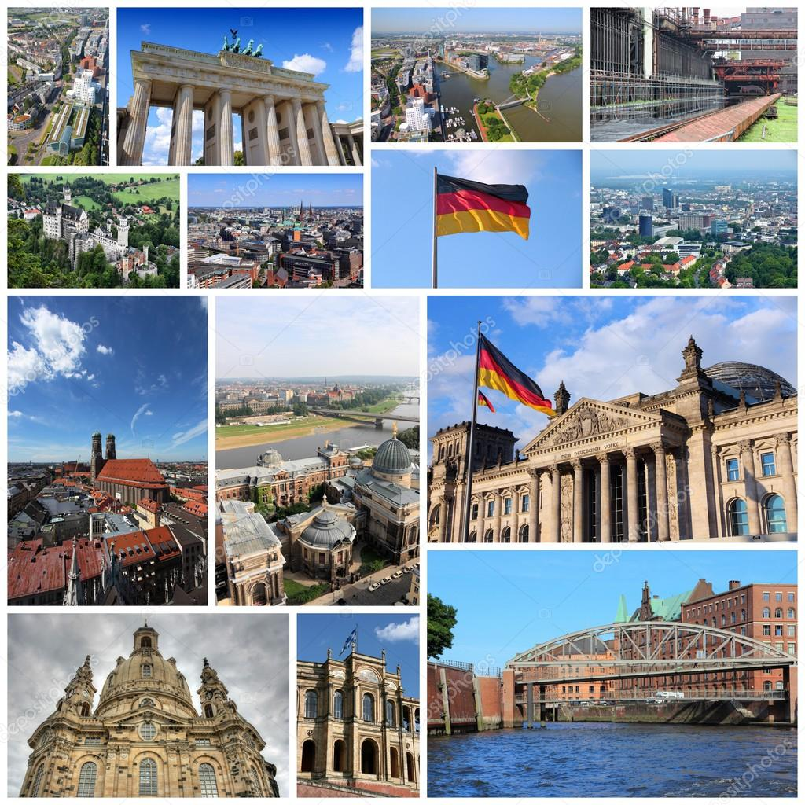

Freshman Year (Current)

Complete German 01
Begin exploring summer/winter programs
Gather information about funding, costs, and eligibility
I'm a first-year student from Pitzer College, and I'm very interested in studying and living in Germany for a while.
I'm currently taking German 01(and introductory course) and planning continue studying German until the end of Sophomore year.
I would prefer study in German for summer break or winter break. If that plan doesn't work out, I will consider apply for a nonapproved Program to study in Germany during my Junior year.
I had been to Germany three times for two weeks travel and would like to explore this country in a more in-depth way.
This website is for my exploration in order to gain a better understanding that helps me to make the final decision.
| Program Type | Time Period | Cost | Open For |
| University Summer School | June–August | Mostly paid (€1,200–€3,000) | Undergraduate / Master’s |
| University Winter School | January–February | Mostly paid | Undergraduate / Master’s |
| DAAD / RISE Germany Research Internship | May–October | Free, with stipend | STEM undergraduates |
| TU9 Undergraduate Summer Programs | June–August | Some free, some paid | Engineering students |
Freshman Year (Current)
Complete German 01
Begin exploring summer/winter programs
Gather information about funding, costs, and eligibility
Sophomore Year
Continue German courses Advanced German
Narrow down program choices: Prepare application materials: 
Summer school? Winter school? Research internship (if eligible)?
Personal statements
Résumé /CV (if required)
Language certificates (if required)
Apply to selected programs (deadlines typically fall between October–March)
Junior Year 
Primary Plan B: Apply to a Non-Approved Program for a semester in Germany
Strengthen German proficiency before departure
Complete administrative steps with the Study Abroad Office
Senior Year
TBD
| Program Type | Critical Deadline |
|---|---|
| DAAD/RISE | ❗ December–January |
| TU9 Summer Schools | ❗ February–March |
| University Summer Schools | ❗ February–April |
| Winter Schools | ❗ September–November |
| Item | Estimated Cost |
|---|---|
| University Summer School | €1,200–€3,000 (program fee) |
| University Winter School | €1,000–€2,500 |
| DAAD / RISE Internship | Free + stipend (covers living costs) |
| TU9 Summer Program | Varies; some free, others €1,000–€2,000 |
| Category | Estimated Cost |
|---|---|
| Housing (student dorm / shared flat) | €350–€550 |
| Food | €200–€300 |
| Transportation (monthly pass) | €30–€60 |
| Health Insurance | €80–€120 |
| Personal Expenses | €150–€250 |
Reasons for Germany:
1. Personal Connection and Previous Visits
I have spent a total of six weeks in Germany over three separate trips. During those visits, I enjoyed the environment, the cities, the public transportation, and the overall atmosphere. These experiences made me curious to learn more about local life beyond tourism.
2. High-Quality Education
German universities are globally respected for:
Strong academic programs ;Research excellence ; Accessible summer/winter schools ; Affordable or free tuition
3. Learning a New Language
I want to continue improving my German. Being in Germany would allow me to practice the language naturally in daily life, accelerating my progress beyond the classroom.
4. Cultural Exploration
Germany offers:
Rich history; Diverse regions and traditions; International communities; Cultural openness and academic freedom; Studying there would allow me to understand another culture more deeply and develop a more global perspective.